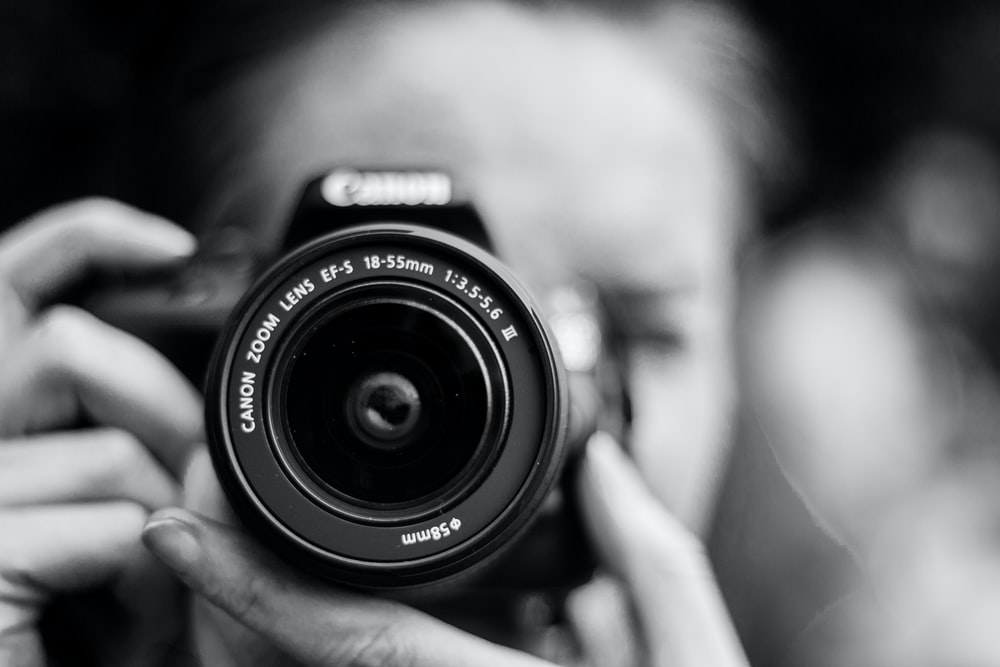
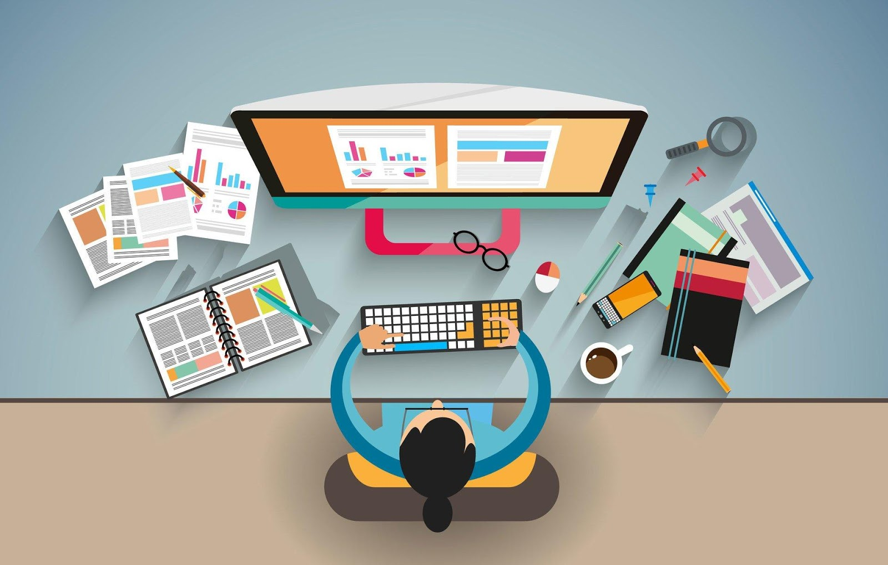

1. Blogging: The easiest thing to take up during this quarantine period is blogging. Writing can be used to express your thoughts in an articulate manner. To start blogging, you can look up websites that help you create your own blog. Choose a topic of your choice and take references from popular blogs to understand how to go about it. Practise writing on a daily basis to improve your speed and share your blogs with people who can help you improve your style in a better way. Bloggers and content writers can earn a good sum of money just by sitting at home and writing for different clients.
2. Graphic Designing: Basic designing is a part and parcel of every digital firm in today’s generation. You can always take up a basic course and look up tutorials to learn. Photoshop is easily available as well. You can start with a trial of this software and let loose your imagination. Seek help from friends who pursue graphic designing, consider their suggestions and practice to hone your skills for the long run.

3. Photography: You don’t need a DSLR to shoot great photos. If you’re sitting at home doing nothing, use your phone to start clicking pictures of things around you. You can experiment with photography techniques. Start your own Instagram page that displays your photography. You can capture scenes of food, nature or even people for that matter. It can be a good freelance hobby and will help in nurturing your creative bent of mind for lucrative job opportunities.
4. Learn a New Language: Learning a second, third or fourth language is a good way to enhance your skills. It helps in communication especially if you are involved in a job that requires a lot of travelling. English is a universal language which is followed by Mandarin, Hindi, Spanish, Arabic and even Malay. Learn the essential ones to make your communication easier. You can also opt for career options that require translators which can fetch you a good sum of money monthly!
5. Website Development: Want to start your own website? You don’t need to hire a web developer for this when you can master the skills to do the same and have people hiring you instead! Head over to Google Search and start looking for Softwares that can help you with the same. It does not take much time and you can learn the basics and be a pro at it in no time!
